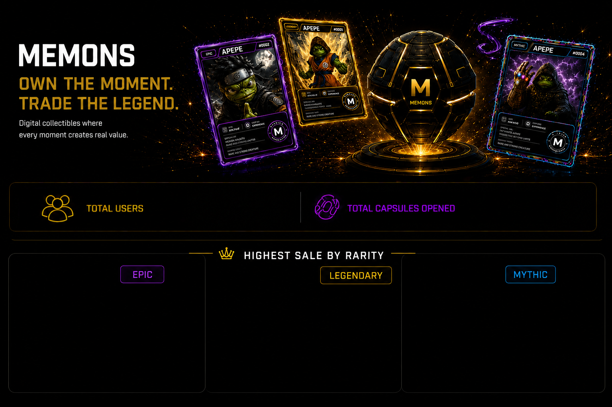
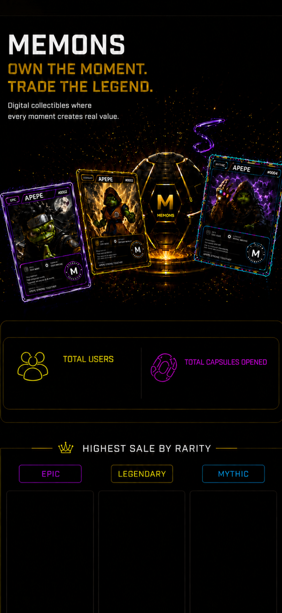
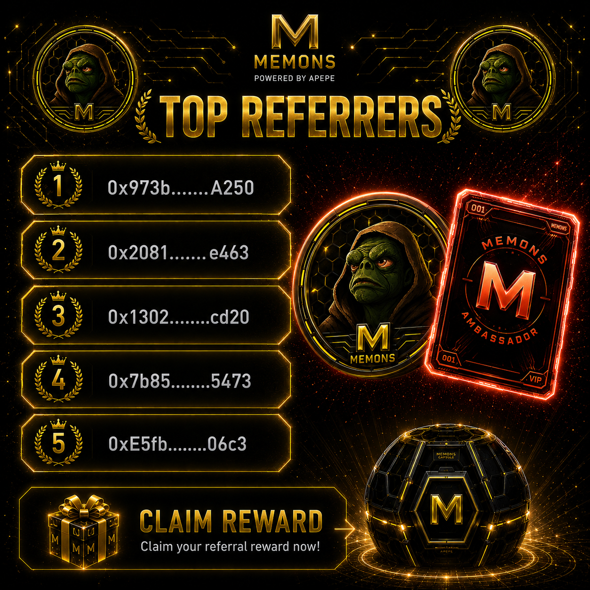

Opening 1 September 2026.Trade, collect, and flex your memes.
Opening 1 September 2026.Your cards are being kept safe until then.
Questions, partnerships, or press — reach out and we'll get back to you.
